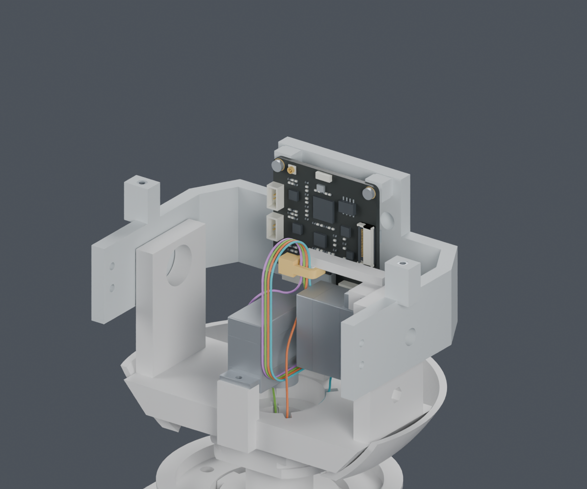
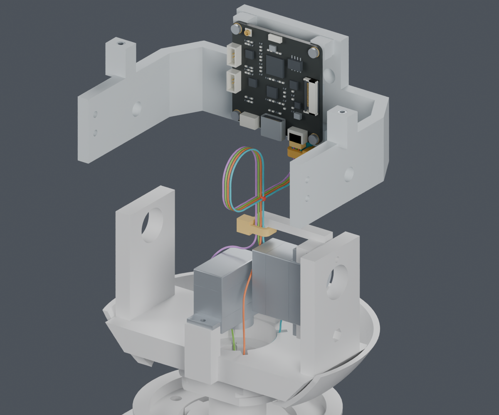
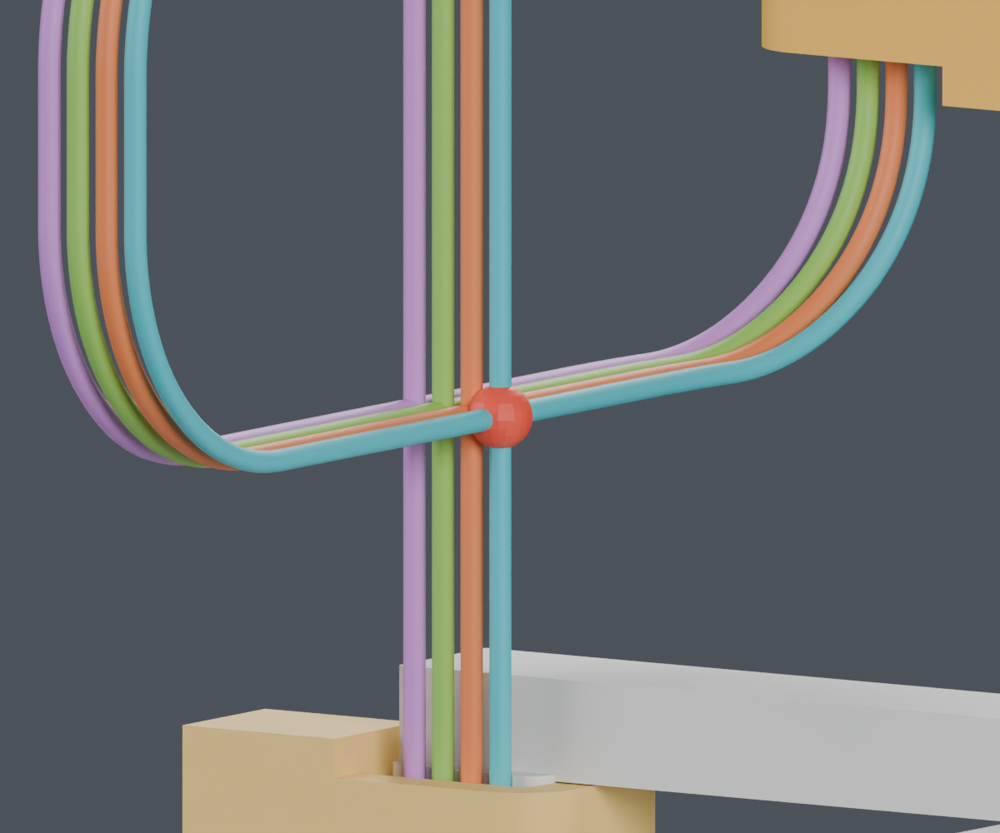
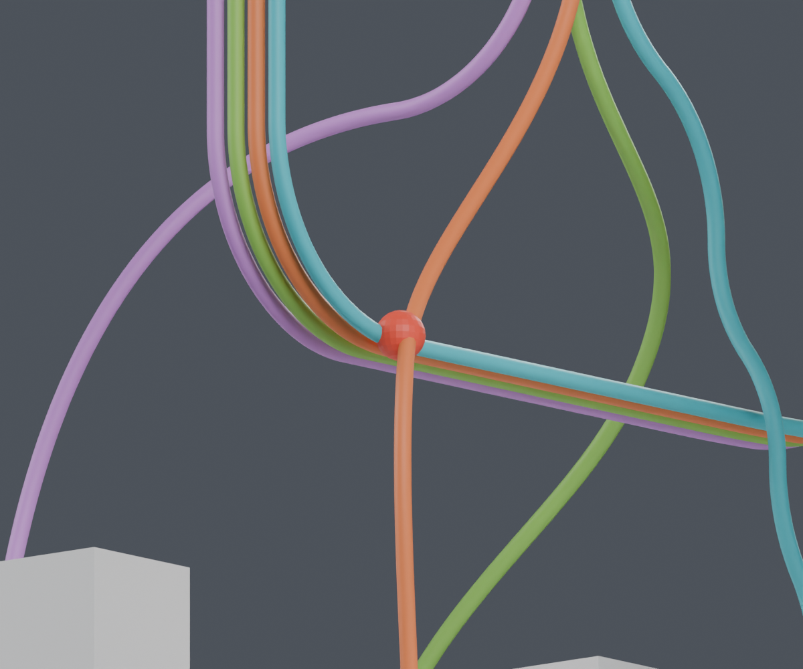

查出一处装配顺序卡点：当前规定线形不能随头托从42mm高度直接下放。完整线束仍为BLOCKED；主模型M1.47、正式动画均未修改。
CAM板、插头、头托与插头侧扎带一起移动，身体端和yaw侧保持不动。每根线的活动段始终为72.610689mm，没有人为拉长导线。


| 检查 | 结果 | 结论范围 |
|---|---|---|
| 0–42mm，15个刚性位置 | PASS | 间隔3mm，包含完整CAM板和候选固定结构 |
| 四线在0、3、6mm | PASS | 只限三个离散位置，连续运动未验证 |
| 9mm起的该组带线位置 | BLOCKED | 先后出现线间余量不足、靠近头座及回碰 |
| 42mm交叠见证 | BLOCKED | 规定曲线的两段实体包络确实交叠 |


图中为规定曲线，不是软线自然弯曲仿真。不能据此判断所有安装方式都不可行，也不能将离散位置的PASS称为完整装配通过。
同一剪钳包络检查了8个方向×3个高度×2种舵机工序，共48组。没有一组同时避开结构、既定线路和尾端工作区。只晚装yaw舵机还不够；“先剪尾、后理线”的顺序仍需完整的松线暂存方案。
比较整体离机预装、身体端暂不固定和CAM板分步就位，先得到可检查的完整路径，再选用。当前未为避让冲突增加孔、凸台或零件。其余七根头部导线、FPC和身体侧固定仍未闭合。
供应商按图制作已经确定。四根线的模型长度表仍仅供参考，裁线列未放行。